Battle wave 2, lane A — slate BET I
(docs/plans/battle-presentation-inventory.md §6.1, §10.7). 2026-08-08.
Instrument: node tools/battle_ko_shots.mjs --port=3000 --tag=<tag> [--arena=world] [--noreact],
1600×813, real GPU, nomusic=1, party [vesper, maren], seed 4242.
No camera move anywhere in this bet — see the last section for why, and for where one was wanted.
The KO scenario drives the stage exactly the way battle_turnbased drives it —
setDead(id,true) and then flinch(id), in that order — because the order of those
two calls turned out to be one of the defects.
| claim | before | after | how it was measured |
|---|---|---|---|
| the body sinks through the floor | 0.550 m | 0.000 m | stage.at(id).y at 34 ms, against the y the same body had alive. In
?arena=world that 0.55 m was through real terrain. |
| anything left where it died | gone at 842 ms | gone at 2260 ms | at(id).alpha. The corpse now falls, lies there for 760 ms solid, then
dissolves and leaves a ground mark. |
| the killing blow flashes | 104.6 | 167.7 | mean luminance of the victim's own screen box 60 ms after the blow, out of a synchronous stage render. Idle reads 121; a survivable hit reads 213. The kill used to be darker than standing still. |
| the victim's ally reacts | 3.0 | 14.0 | mean |ΔL| over that body's own screen box against a frame taken one tick before the
blow. Rotation: bob 0 → 0.63 rad. |
| the killer's ally reacts | 7.3 | 10.5 | same metric. Her floor is higher because her idle clip moves her; the reaction clears it. |
| the tally covers the party | vesper inside the box, maren behind the blur | nobody | the box's own getBoundingClientRect against every body's projected anchor,
read while the box is on screen. |
| last foe down → tally on screen | 1812 ms | 2985 ms | wall clock in the driver. The added time is the held moment and the cheer — see §4. |
battle_turnbased calls syncHp()
— therefore setDead() therefore markDead() — before hitShake()
— therefore flinch() — and flinch() returns early on a body that is already
dead. So the loudest blow in the fight was the one blow in the game with no flash, no sparks and no
shock ring. That is what the 104.6 above is. The impact package is now its own function
(impactFx) and markDead calls it.
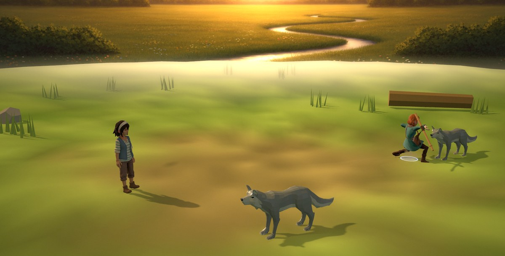
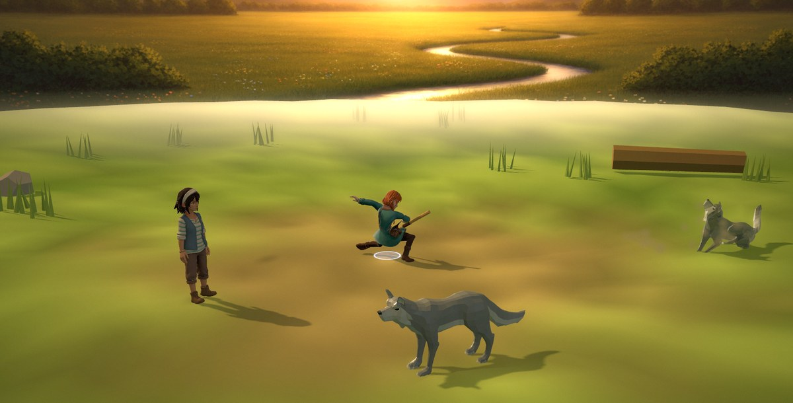
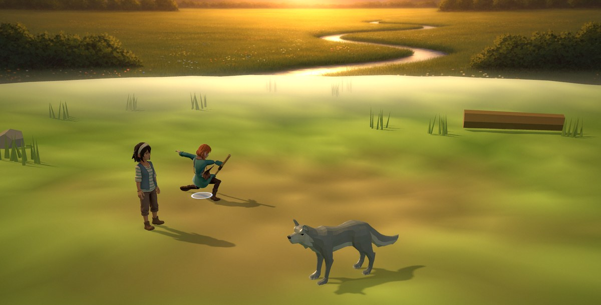
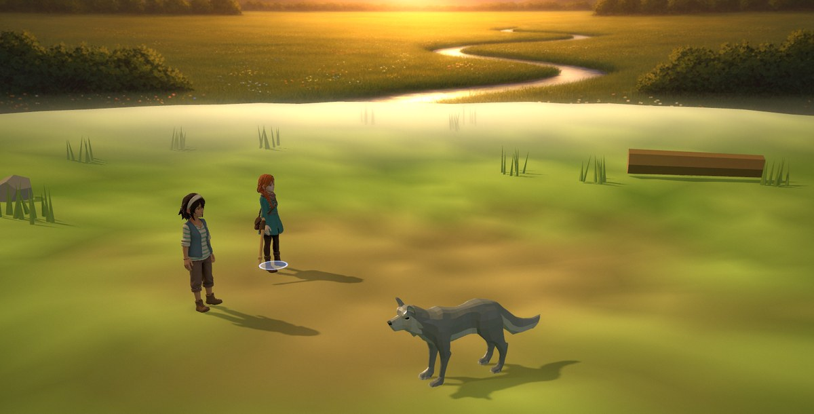
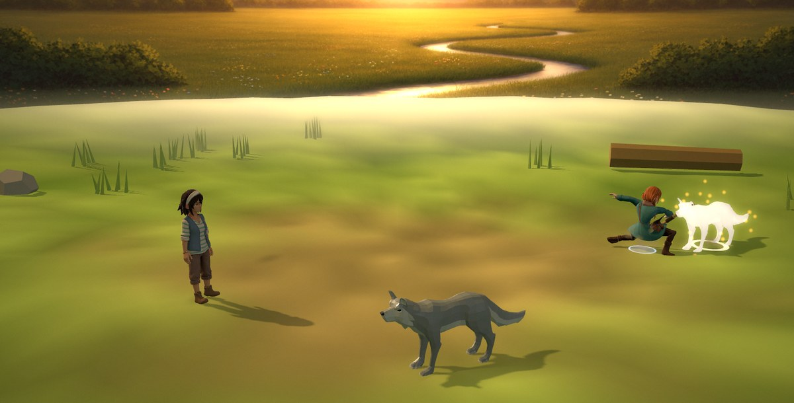
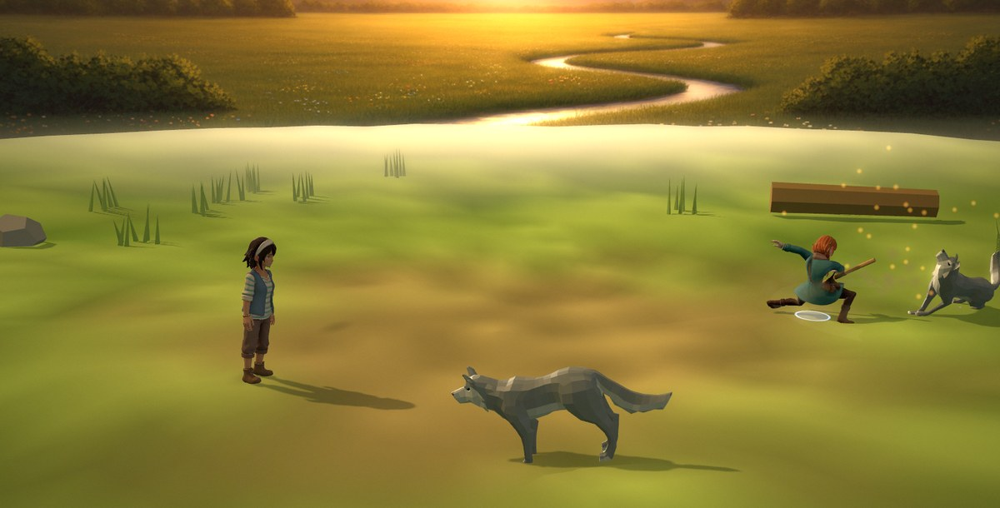
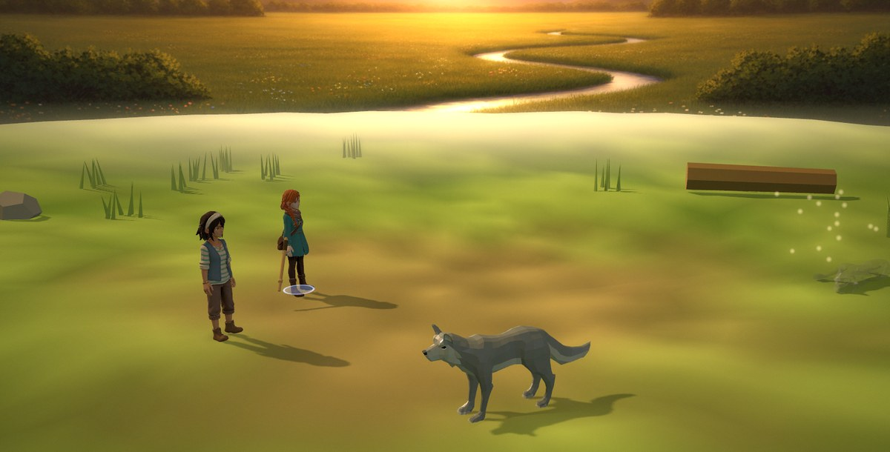
The A/B is on one build: --noreact zeroes CFG.ko.react's amplitudes
before the blow, so the only difference between the two frames is whether the survivors react — the
staging, the fall and the hold underneath are identical.
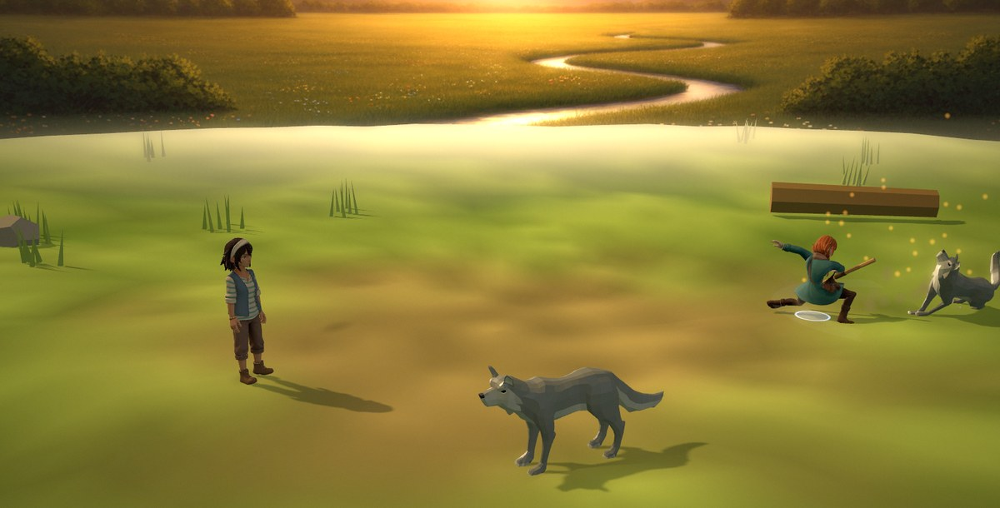
Two sides do not react the same way, and that is a measurement rather than a preference.
The first pass scaled one amplitude down for the far side and gave the party 0.18 rad and a pixel
delta of 7.52 against a do-nothing floor of 7.30 — invisible, because a party member is
already facing the foes and "turn to look" has almost no bearing to travel. The victim's own side now
recoils (away from the blow, 0.26 rad); the side that did the killing leans in and holds
(0.22 rad). No clip was added — there is none to source — and both compose on the bob
node exactly the way procRecoil does, so a body with a Hit clip and a body without get
the same reaction.
stage.anchor(id) and reported 3–5 px whether the reaction fired or not.
anchor() projects the pivot and a constant height, so it is blind to every
procedural layer in battle_stage3d by construction — the swing, the recoil, the flee turn
and this reaction all live on bob, which anchor never reads. A gate built on
it would have called the whole feature a no-op. It has to be pixels.
The cheer used to fire on the same line that appended the tally box, so the one victory pose this
cast has was played behind a dimmed, blurred panel that covered the party. The order is now:
the field alone while the last body settles and the survivors' reactions play out
(pacing.winHold 900 ms), then the cheer, then — once it has been on screen long enough to
be a picture (pacing.winCheer 620 ms) — the tally. speed: 0 (every suite,
every automated caller) still gets all of it at once.
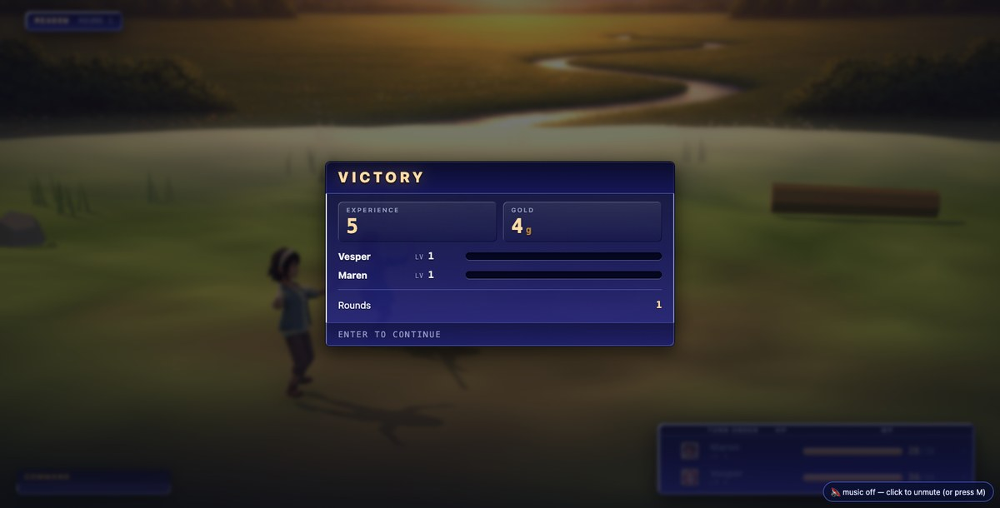
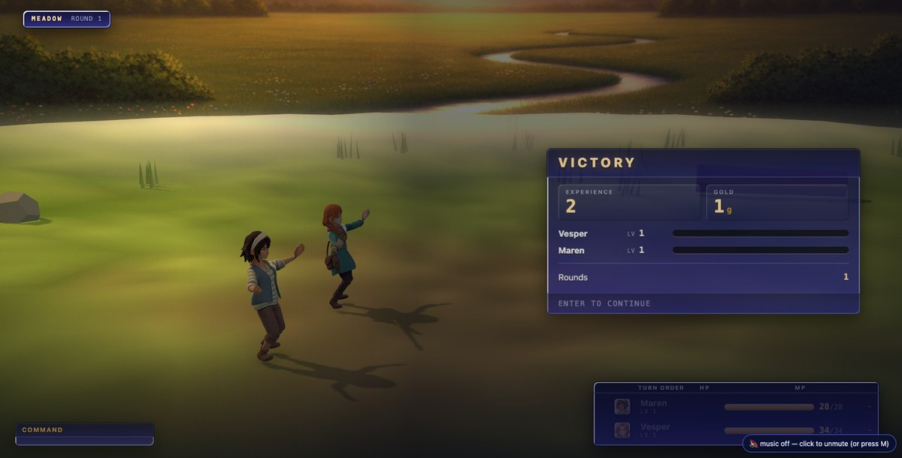
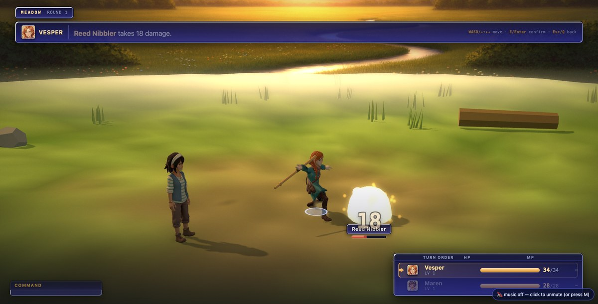
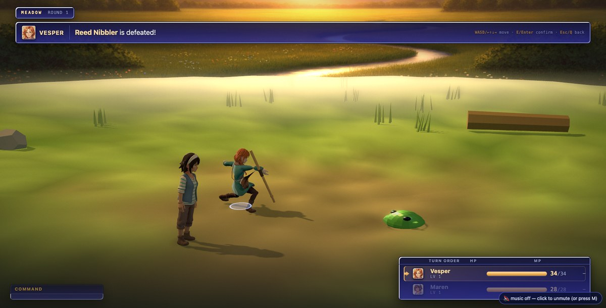
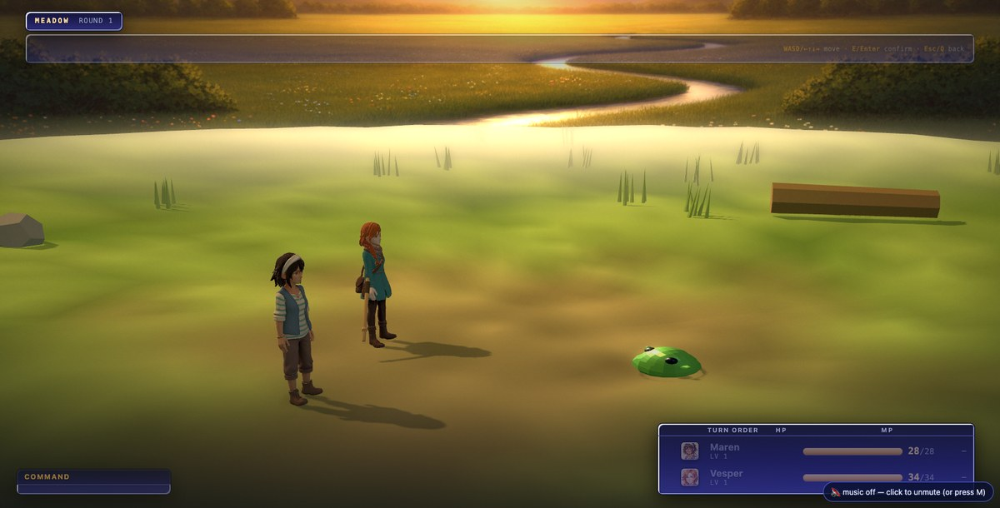
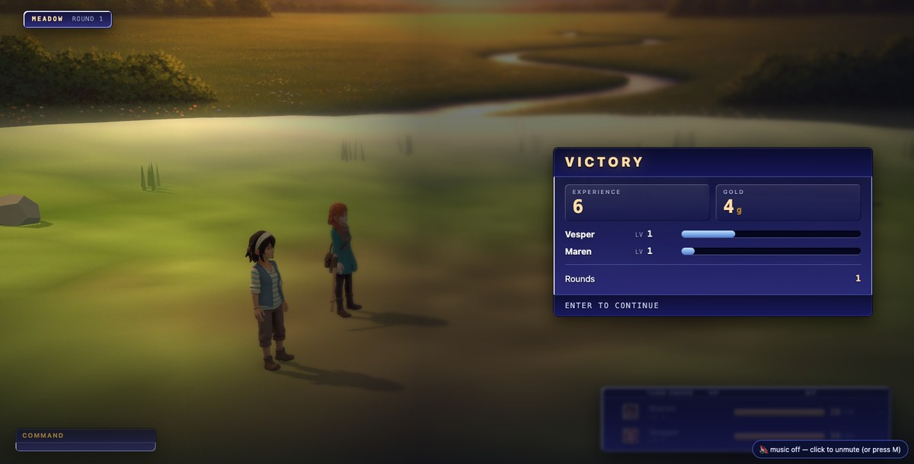
Which side the box stands on is asked, never assumed. The diorama writes its handedness down
once (CFG.partySide) but the world arena solves its camera yaw against the terrain,
so the only honest answer is where the bodies actually project at outro time. No stage (the DOM
fallback) = centred and fully dimmed, exactly as before.
A CSS trap paid for once and written down in the source: the scrim is
position:absolute and a static flex item paints below a positioned sibling, so the
first build put the dim and the blur on top of the panel and the backdrop plate showed
straight through the VICTORY box. .ebb-obox is now positioned.
?arena=world — the same beat, and the sink that mattered mostThe diorama's 0.55 m sink put a body under a procedural dish. This stage stands its bodies on real
terrain solved out of SIM.ground, so the same line drove a corpse 0.55 m through solid
rock. The rest height is now the real floor under wherever the body landed — asked of the scene,
never assumed to be a plane. Measured: sink 0.000 m, corpse present until 2239 ms, reaction
rotations 0.63 / 0.22 rad.
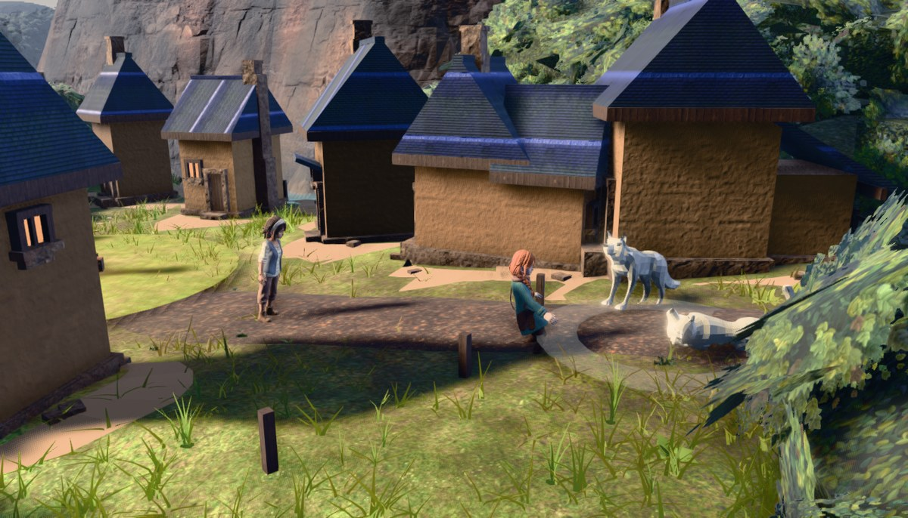
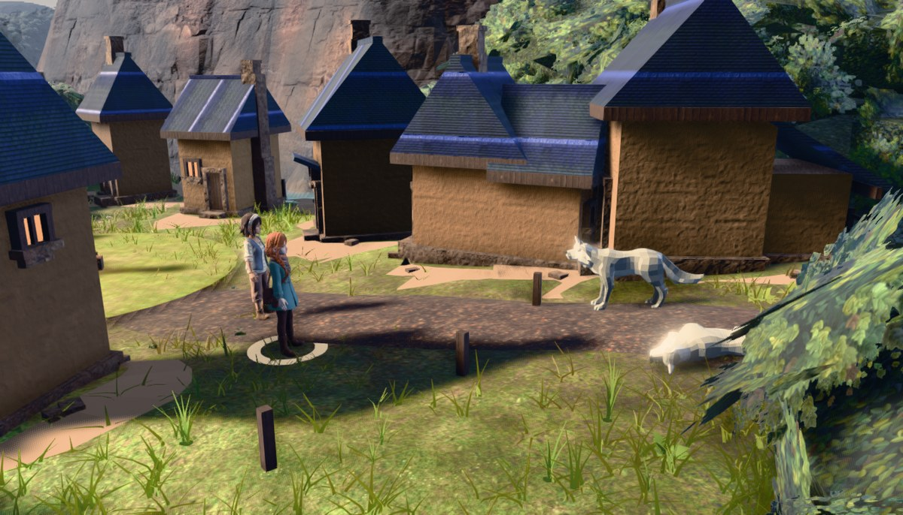
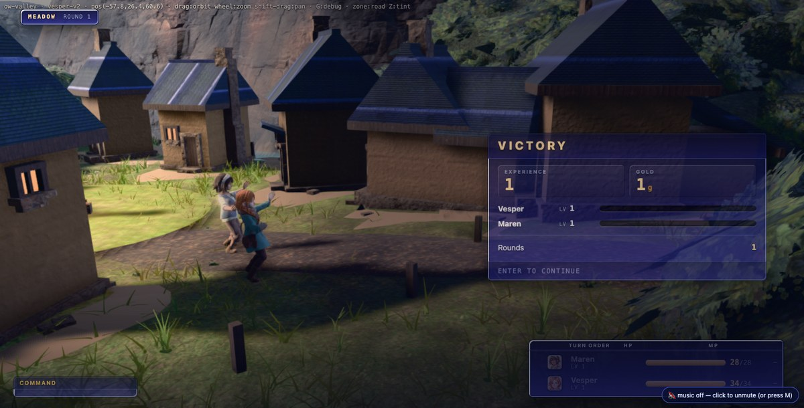
public/assets/battle/MANIFEST.md), so a
shot on the kill is not a tuning change to the diorama — it is a re-shoot of its world, and the
camera language is a separate gated bet (BET B). Where one was wanted: a slow push toward the
body during the 760 ms hold, and a move onto the party for the victory cheer. Both are
written into the DAYLOG rather than built.bob because there is no
CC0 "react to a death" donor to source, and the file's own rule is that a body without a clip
must still be seen to do the thing.battle_rules.js. Read, never edited. No number, no turn order, no
damage. battle_sim and encounter_sim stay green by not being affected.| gate | result |
|---|---|
node tools/battle_sim.mjs | ALL ENVELOPES GREEN · 6 engine property tests passed |
node tools/encounter_sim.mjs | ENCOUNTER INTEGRATION GREEN |
node tools/arena_playtest.mjs --port=3000 |
nogl PASS · serial PASS (teardown total, no context leak, warm heap drift 1.9 MB) · organic FAIL "no hostile zone reachable" — reproduced identically on a pristine HEAD checkout of the three files, so it is not this lane's. |
node tools/transition_test.mjs --port=3000 |
167 ok / 1 failed — after battle: del-cine|shelf-west geo +2.
The same server run against a pristine HEAD copy of the three files scores byte-identically
(164/4 on that host, same four assertions, same deltas), and swapping this lane's files in
changes nothing at all — the receipt is in the DAYLOG. Console gate green:
no errors across the whole run. |